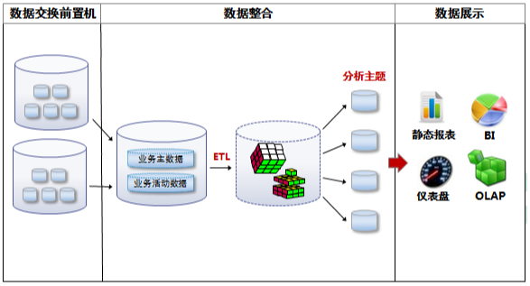

四川省诊所类医疗健康数据接入规范
（征求意见稿）
四川省卫生和计划生育信息中心
2020年11月
前言
为了进一步规范诊所开展的医疗保健行为，实现诊所与区域全民健康信息平台（医疗服务监管信息系统）对接，建立诊所的医疗质量控制体系，加强对诊所运营和医疗服务监管，确保诊所的医疗质量安全。
本规范在《四川省人口健康信息平台批量数据采集中间库标准》的基础上，结合诊所信息化建设的功能规范、实际开展的医疗保健服务行为，结合卫生行政部门对诊所的管理要求，分析诊所信息化建设进展以及数据条件，充分考虑系统性、科学性和可行性的基础上制定。
本规范的目标是为了实现诊所与区域全民健康信息平台（医疗服务监管信息系统）互联互通，形成常态化的诊所数据报送、分析、反馈机制，有力支撑卫生行政部门管理与决策，服务诊所的科学管理。尽量做到规范数据报送渠道与口径，避免重复报送，实现“一次采集，多次应用”。
本规范由四川省卫生信息中心统一发布及信息解释，此后将按照卫生信息部门管理、决策需求，以及诊所信息化建设的进展对规范进行适当调整和修订。
目 录
范围
本规范适用于诊所类机构接入区域全民健康信息平台（医疗服务监管信息系统），所需要完成的数据采集汇聚工作。
本规范对诊所类机构在开发数据上传接口的工作规范约束。
本规范适用于相关卫生行政部门以及第三方评估机构等对诊所的医疗服务、保健服务进行管理的数据治理、分析、利用、转化等工作参考。
规范性引用文件
下列文件对于本文件的应用是必不可少的。凡是注日期的引用文件，仅注日期的版本适用于本文件。凡是不注日期的引用文件，其最新版本（包括所有修改单）适用于本文件。
-
WS 445----2014 电子病历基本数据集
-
WS 446----2014 居民健康档案医学检验项目常用代码
-
WS 599----2018医院人财物运营管理基本数据集
-
WS/T 517----2016 基层医疗卫生信息系统基本功能规范
-
WS/T 500----2016电子病历共享文档规范
-
WS/T 543----2017 居民健康卡技术规范
-
WS/T 545----2017 远程医疗信息系统技术规范
术语和定义
以下对本文提到的相关术语及定义进行阐述说明。
诊所
诊所是为患者提供门诊诊断和治疗的医疗机构，不设住院病床（产床），主要提供常见病和多发病的诊疗服务。
健康医疗服务
诊所专业人员或专业辅助人员对居民提供的对健康状况有影响的服务。
健康医疗数据
包括个人健康医疗数据以及由个人健康医疗数据加工处理之后得到的健康医疗相关数据。
健康医疗信息系统
以计算机课处理的形式采集、存储、处理、传输、访问、销毁健康医疗数据的系统。
数据规范说明
个人标识类型、个人标识号
个人标识包括两部分内容（个人标识类型与个人标识号），在监管平台中作为个人的唯一识别码，对于相同的个人标识代表相同个人，对于不同的个人标识不一定代表不同的个人，需要和证件号码、证件类型等进行比对后才能确定是否是不同个人^1。
个人标识类型
00：社保卡；01：医保卡；02：统一自费卡；03：非统一自费卡；05：健康卡；06：电子健康卡；07：医疗机构内部就诊卡；10：医院联盟就诊卡；21：区域联盟就诊卡；99：其他卡。
当个人标识类型为00、01、05、10、21时，患者信息表的证件号码和证件类型数据不能为空，并必须填写居民身份证信息。
就诊流水号定义规范
患者每次就诊（门诊、住院）所产生的就诊唯一识别码，患者每次就诊（门诊、住院）需要产生不同的就诊流水号。
机构代码规范
数据采集标准中医疗机构代码字段内容为监管平台区分各机构的唯一识别码，采用统一社会信用代码中的9-17位组成。
日期、日期时间类型字段规范
数据采集标准中涉及的日期、日期时间类型字段都是北京时间，日期时间类型字段如果无特别说明，请以YYYY-MM-DD hh:mm:ss格式进行数据上传；日期类型字段如果无特别说明，请以YYYY-MM-DD格式进行数据上传。
浮点类型字段长度说明
数据采集标准中浮点类型字段数据长度：前面表示总长度，分割符逗号后表示小数位数，如12,4表示总位数为12位，小数位保留4位，整数位只有8位。
卫生活动资源目录
数据采集优先级说明
根据卫生管理部门对监管信息要求的侧重情况和诊所类卫生信息化系统建设情况，卫生数据采集的难易程度将数据采集规范划分为3个登记：
1级：属于卫生管理部门要求的核心数据，必须采集；
2级：属于卫生管理部门要求的重点数据，积极采集；
3级：数据卫生管理部门要求的扩展数据，根据实际情况采集。
卫生活动资源目录
| 序号 | 目录 | 接口表 | 优先级 | 说明 |
|---|---|---|---|---|
| 1 | 基础信息 | 机构信息表（TB_YLJG_INFO） | 1级 | |
| 2 | 科室信息表（TB_KSXX） | 1级 | ||
| 3 | 医护人员表（TB_YHRY） | 1级 | ||
| 4 | 医疗设备表（TB_YLSB） | 1级 | ||
| 5 | 患者概要信息 | 患者基本信息（TB_HZXX） | 1级 | |
| 6 | 挂号信息 | 挂号明细表（TB_MZ_GHMXB） | 1级 | |
| 7 | 就诊信息 | 门诊就诊明细表(TB_MZ_JZMXB) | 1级 | |
| 8 | 诊断信息 | 门诊诊断明细表(TB_MZ_ZDMXB) | 1级 | |
| 9 | 处方信息 | 门诊处方主表（TB_MZ_CFZB） | 1级 | |
| 10 | 门诊药品处方明细表（TB_MZ_YPCFMXB） | 1级 | ||
| 11 | 门诊其他处方明细表（TB_MZ_QTCFMX） | 1级 | ||
| 12 | 费用信息 | 门诊费用明细表(TB_MZ_SFMXB) | 1级 | |
| 13 | 检验报告信息 | 检验报告主表(TB_JY_JYBGZB) | 2级 | |
| 14 | 检验结果指标表（TB_JY_JYJGZBB） | 2级 | ||
| 15 | 细菌结果表(TB_JY_XJJGB) | 3级 | ||
| 16 | 药敏结果表(TB_JY_YMJGB) | 3级 | ||
| 17 | 检查报告信息 | 医学检查报告表(TB_JC_YXJCBGB) | 2级 | |
| 18 | 费用结算信息 | 门诊结算明细表（TB_MZ_JSMXB） | 1级 | |
| 19 | 门诊结算支付方式明细表（TB_MZ_JSZFFSMXB） | 1级 | ||
| 20 | 病历信息 | 门（急）诊病历信息（TB_BL_MZBLXX） | 3级 |
对接方式
单诊所类
对于单诊所类，信息化相对比较独立的机构，由所在辖区的各区（市）县卫健局指导，接入本机全民健康信息平台。并由区（市）县卫健局对诊所的日常数据接入进行监督管理。
如果本区（市）县未建立全民健康信息平台，辖区内诊所可以直接对接市级全民健康信息平台，由市级全民健康信息平台对日常数据接入进行管理。
连锁化、集团化类
对连锁化、集团化诊所由集团统一建设集成信息系统，包含所有成员诊所诊疗和服务信息，接入到备案区（市）县全民健康信息平台。属于在市卫健委备案的跨区（市）县经营的连锁化、集团化诊所，接入市级全民健康信息平台。
数据采集接口规范
各诊所类机构可以根据自身信息化系统建设情况，选择实时/批量的数据对接方式，建议在不影响诊所内部信息化系统的基础上，采用实时的数据对接方式。
API接口服务规范
交互方式
平台提供服务接口，服务方式httpService,数据提供方通过程序将数据装成指定JSON格式，以POST方式向平台发送数据,平台接收请求对数据进行持久化。
请求说明：HIS 平台接口
调用流程
对接方式
数据加密
数据传输过程需对参数进行加密，整个接口的以密文传输，适用国密SM4算法(国家已开放算法)，提供java加密，解密jar,如果是java后台在引入jar后可直接调用。
加密调用common-endecrypt-2.0.0.jar中的Sm4HexEn.encode("明文")方法;
解密调用common-decrypt-2.0.0.jar中的Sm4HexDe.decode("密文");方法
如果非java程序进行加解密需自行实现，有两种方式【自行实现】或【将JAR转DLL】
算法使用SM4的ECB模式
byte[] keyBytes = {
17, 34, 79, 88, -120, 16,
64, 56, 40, 37, 121, 81, -53, -35,
85, 102 };
自行实现算法时不要调用Base64编码，需直接将加密结果转成16进制。
如果是调用动态库，可将jar包转成DLL来调用
接口调用及示例
以挂号明细表（TB_MZ_GHMXB）章节为例：
接口编码：命名为数据采集标准文档中英文表名如下：TB_MZ_GHMXB
接口名称：命名挂号明细表
接口方法：调用统一的方法execute
调用方式：一次调用传一张表数据(批量或单条业务数据)，例如:传10张表数据则可并发调用10次该方法。
入参参数示例:
{"ProviderCode":"xxxhis","AccessOrgCode”:"接入医疗机构编码", "InterfaceCode":"TB_MZ_GHMXB","InterfaceName":"挂号明细表", "data":[{ "YLJGDM":"医疗机构代码","GHJLID":"挂号记录ID","JZLSH":"就诊流水号","GRBSLX":"个人标识类型","GRBSH":"个人标识号","GTHBZ":"退号标志","STFBH":"收/退费编号","GTHSJ":"挂/退号时间","GHLB":"挂号类别","SFJZ":"是否急诊","JZXZ":"就诊性质","GHTJBM":"挂号途径代码","BXLX":"保险类型（患者属性）","KSBM":"科室编码","KSMC":"科室名称","LCYXLXDM":"临床医学类型代码","GHYSBH":"挂号医生编号","GHYSXM":"挂号医生姓名","TXBZ":"特需标志","WDBZ":"外地标志","GHZFY":"挂号总费用","XGBZ":"修改标志"},{…..}]})。
入参参数节点说明：
| 节点 | 名称 | 说明 |
|---|---|---|
| ProviderCode | 接入厂商编码 | 平台统一提供 |
| AccessOrgCode | 接入医疗机构编码 | 组织机构代码 |
| InterfaceCode | 接口编码 | 参见接口编码规范示例 |
| InterfaceName | 接口名称 | 参见接口名称规范示例 |
| data | 数据节点包含表中所有的字段，key对应表中字段名，value为业务数据。且该data节点为JSON数组格式 |
返回参数：
{“ResultCode”:””,”ResultMessage”:”消息描述”}
返回参数节点说明：
| 节点 | 名称 | 说明 |
|---|---|---|
| ResultCode | 结果状态 | 0成功 1失败 |
| ResultMessage | 消息描述 |
库表对接服务规范
交互方式
库表对接方式即采用库对库模式，即系统将数据写入指定的数据交换前置机，由数据交换前置机和监管平台进行数据交换处理。

数据传输问题的反馈和处理
各接入单位的数据传输至前置机后，可以在前置机查看数据问题情况，包括汇总和问题明细。接入单位和接入单位厂商前期每天查看数据问题情况并进行改进后重传。数据质控规则及查看方式另行规定。
数据采集内容规范
基础信息
机构信息表（TB_YLJG_INFO）
| 标识符 | 中文名 | 字段名 | 数据类型 | 数据长度 | 填报要求 | 备注 |
|---|---|---|---|---|---|---|
| 统一社会信用代码 | SHXYDM | 字符串 | 20 | 必填 | 主键 | |
| 机构名称 | CAPTION | 字符串 | 200 | 必填 | ||
| 机构组织代码 | DETP_CODE | 字符串 | 85 | 必填 | 经《医疗机构执业许可证》登记的代码 | |
| 经济类型 | DEPT_CLASS | 字符串 | 85 | 应填 | 登记注册类型代码表 | |
| 机构类别 | DEPT_CLASS | 字符串 | 85 | 应填 | 医疗卫生机构类别代码表 | |
| 机构分类管理 | JGFLGL | 字符串 | 85 | 应填 | 机构分类管理代码表 | |
| 是否分支机构 | FZJG | 字符串 | 2 | 必填 | 0：否；1：是 | |
| 上级组织机构代码 | FZJG_SJJGDM | 字符串 | 20 | 应填 | 是分支机构必填 | |
| 上级组织机构名称 | FZJG_SJJGMC | 字符串 | 200 | 应填 | ||
| 设置/主办单位 | SZZBDW | 字符串 | 2 | 应填 | 设置/主办单位代码表 | |
| 行政区划代码 | XZQHDM | 字符串 | 8 | 应填 | 行政区划代码表 | |
| 街道行政区划 | DEPT_XZJDCODE | 字符型 | 85 | 应填 | 单位所在乡镇街道代码 | |
| 乡镇街道名称 | DEPT_XZJD | 字符型 | 200 | 应填 | ||
| 地址 | TX_DZ | 字符型 | 200 | 应填 | 单位所在详细地址 | |
| 省 | SHENG | 字符型 | 200 | 应填 | ||
| 市 | SHI | 字符型 | 200 | 应填 | ||
| 县 | XIAN | 字符型 | 200 | 应填 | ||
| 邮政编码 | TX_YZBM | 字符型 | 200 | 应填 | ||
| 电话号码 | TX_DHHM | 字符型 | 200 | 应填 | 医疗机构联系电话 | |
| 开业时间 | CLSJ | 字符型 | 200 | 应填 | XXXX年XX月 | |
| 法人（负责人） | FZR | 字符型 | 200 | 应填 | ||
| 注册资金（万元） | ZCZJ | 字符型 | 200 | 应填 | ||
| 医院级别 | YYDJ_J | 字符型 | 200 | 应填 | ||
| 医院等次 | YYDJ_D | 字符型 | 200 | 应填 | ||
| 修改标志 | XGBZ | 字符串 | 1 | 必填 | 1：新增；2：更新/覆盖 | |
| 业务数据时间 | YWSJSJ | DATETIME | 必填 | |||
| 预留一 | YL1 | 字符型 | 200 | 应填 | ||
| 预留二 | YL2 | 字符型 | 200 | 应填 |
科室信息表（TB_KSXX）
| 标识符 | 中文名 | 字段名 | 数据类型 | 数据长度 | 填报要求 | 备注 |
|---|---|---|---|---|---|---|
| 统一社会信用代码 | SHXYDM | 字符串 | 20 | 必填 | 复合主键 | |
| 本地科室代码 | BDKSDM | 字符串 | 15 | 必填 | 复合主键 | |
| 本地科室名称 | BDKSMC | 字符串 | 50 | 必填 | ||
| 标准科室代码 | BZKSDM | 字符串 | 15 | 必填 | 标准科室代码表 | |
| 标准科室名称 | BZKSMC | 字符串 | 50 | 必填 | ||
| 上级科室代码 | FLKSDM | 字符串 | 15 | 应填 | 上级本地科室代码 | |
| 上级科室名称 | FLKSMC | 字符串 | 50 | 应填 | ||
| 编制床位数 | BZCWS | 字符串 | 5 | 应填 | ||
| 开放床位数 | KFCWS | 字符串 | 5 | 应填 | ||
| 修改标志 | XGBZ | 字符串 | 1 | 必填 | 1：新增；2：更新/覆盖 | |
| 业务数据时间 | YWSJSJ | DATETIME | 必填 | |||
| 预留一 | YL1 | 字符型 | 200 | 应填 | ||
| 预留二 | YL2 | 字符型 | 200 | 应填 |
医护人员表（TB_YHRY）
| 标识符 | 中文名 | 字段名 | 数据类型 | 数据长度 | 填报要求 | 备注 |
|---|---|---|---|---|---|---|
| 统一社会信用代码 | SHXYDM | 字符串 | 20 | 必填 | 复合主键 | |
| 人员信息ID | USERID | 字符串 | 255 | 必填 | 复合主键 | |
| 工号 | GH | 字符串 | 255 | 必填 | 人员在机构HIS系统中工号，用于和诊疗相关信息关联 | |
| 姓名 | XM | 字符串 | 255 | 应填 | ||
| 性别代码 | XBDM | 字符串 | 255 | 应填 | ||
| 性别 | XB | 字符串 | 255 | 应填 | ||
| 出生日期 | CSRQ | 字符串 | 255 | 应填 | ||
| 身份证件号码 | SFZJHM | 字符串 | 255 | 应填 | ||
| 所属科室代码 | SSKSDM | 字符串 | 15 | 必填 | 所属本地科室代码 | |
| 所属科室名称 | SSKSMC | 字符串 | 50 | 必填 | ||
| 民族 | MZ | 字符串 | 255 | 应填 | ||
| 手机号码 | SJHM | 字符串 | 255 | 应填 | ||
| 获得证书类别 | HDZSLB | 字符串 | 255 | 应填 | ||
| 证书编码 | ZSBM | 字符串 | 255 | 应填 | ||
| 专业技术职务代码 | ZYJSZWDM | 字符串 | 255 | 应填 | ||
| 学历 | XL | 字符串 | 255 | 应填 | ||
| 学位 | XW | 字符串 | 255 | 应填 | ||
| 所学专业 | SXZY | 字符串 | 255 | 应填 | ||
| 麻醉药品、第一类精神药品处方权 | SF1 | 字符型 | 255 | 应填 | ||
| 特殊级抗菌药处方权 | SF2 | 字符型 | 255 | 应填 | ||
| 限制性抗菌药处方权 | SF3 | 字符型 | 255 | 应填 | ||
| 非限制性抗菌药处方权 | SF4 | 字符型 | 255 | 应填 | ||
| 流入时间 | LRSJ | 字符型 | 255 | 应填 | ||
| 流出时间 | LCSJ | 字符型 | 255 | 应填 | ||
| 修改标志 | XGBZ | 字符串 | 1 | 必填 | 1：新增；2：更新/覆盖 | |
| 业务数据时间 | YWSJSJ | DATETIME | 必填 | |||
| 预留一 | YL1 | 字符型 | 200 | 应填 | ||
| 预留二 | YL2 | 字符型 | 200 | 应填 |
医疗设备表（TB_YLSB）
| 标识符 | 中文名 | 字段名 | 数据类型 | 数据长度 | 填报要求 | 备注 |
|---|---|---|---|---|---|---|
| 统一社会信用代码 | SHXYDM | 字符串 | 20 | 必填 | 复合主键 | |
| 设备ID | SBID | 字符串 | 120 | 必填 | 复合主键 | |
| 设备编号 | SBBM | 字符型 | 250 | 应填 | ||
| 设备名称 | SBMC | 字符型 | 250 | 应填 | ||
| 设备型号 | SBXH | 字符型 | 250 | 应填 | ||
| 设备代号 | SBDH | 字符型 | 250 | 应填 | 医疗机构上报设备与代码表 | |
| 设备代号名称 | SBDHMC | 字符型 | 250 | 应填 | 医疗机构上报设备与代码表对应名称 | |
| 产地 | CD | 字符型 | 250 | 应填 | ||
| 生产厂家 | SCCJ | 字符型 | 250 | 应填 | ||
| 购买价格 | GMJG | 字符串 | 20 | 应填 | （单价千元，人民币） | |
| 购买日期 | GMRQ | 字符串 | 20 | 应填 | XXXX年XX月 | |
| 购买时新旧状况 | XJZK | 字符串 | 20 | 应填 | 1：新设备，2：二手设备 | |
| 相同型号设备台数 | XTSBTX | 字符型 | 250 | 应填 | 该批设备购买日期、名称、生产厂家、型号及价格完全一致数量。 | |
| 理论设计寿命 | LLSJSM | 字符型 | 250 | 应填 | （年） | |
| 使用情况 | SYQK | 字符串 | 20 | 应填 | 1：启用，2：未启用；3：报废 | |
| 修改标志 | XGBZ | 字符串 | 1 | 必填 | 1：新增；2：更新/覆盖 | |
| 业务数据时间 | YWSJSJ | DATETIME | 必填 | |||
| 预留一 | YL1 | 字符型 | 200 | 应填 | ||
| 预留二 | YL2 | 字符型 | 200 | 应填 |
患者概要信息
患者基本信息（TB_HZXX）
服务对象个人信息是对服务对象身份识别的基础。服务对象注册和查询所需的信息都与该内容相关，特别是服务对象的发现服务，判别和识别一个人身份，都需要该表的信息。
| 标识符 | 中文名 | 字段名 | 数据类型 | 数据长度 | 填报要求 | 备注 |
|---|---|---|---|---|---|---|
| DE08.10.052.00 | 医疗机构代码 | YLJGDM | 字符串 | 22 | 必填 | 复合主键 |
| 个人标识类型 | GRBSLX | 字符串 | 16 | 必填 | 复合主键；患者识别码，与患者各种就诊信息记录进行关联 | |
| 个人标识号 | GRBSH | 字符串 | 36 | 必填 | ||
| DE02.01.031.00 | 证件类型 | ZJLX | 字符串 | 2 | 必填 | CV02.01.101身份证件类别代码表 |
| DE02.01.030.00 | 证件号码 | ZJHM | 字符串 | 18 | 必填 | 证件号码填写证件的实际号码 |
| 居民身份证号码 | SFZHM | 字符串 | 18 | 应填 | 填写18位身份证号码，有国家健康卡居民为必填 | |
| DE01.00.009.00 | 健康档案编号 | JKDABH | 字符串 | 36 | 应填 | 填写国家规定的标准健康档案编号，已建档居民为必填 |
| 居民健康卡卡号 | JKKKH | 字符串 | 36 | 应填 | 居民健康卡卡号 | |
| DE02.01.040.00 | 性别 | XB | 字符串 | 1 | 必填 | GB/T2261.1-2003生理性别代码表 |
| DE02.01.039.00 | 姓名 | XM | 字符串 | 50 | 必填 | 患者姓名 |
| DE02.01.060.00 | 患者类型 | HZLX | 字符串 | 1 | 必填 | CV09.00.404代码 患者类型代码表 |
| DE02.01.018.00 | 婚姻状况 | HYZK | 字符串 | 2 | 必填 | GB/T2261.2-2003婚姻状况代码表 |
| DE02.01.005.01 | 出生日期 | CSRQ | 日期 | 必填 | ||
| 出生地 | CSD | 字符串 | 120 | 必填 | 县（区）行政区划区代码 | |
| DE02.01.025.00 | 民族 | MZ | 字符串 | 2 | 必填 | GB/T3304-1991民族类别代码表 |
| DE2.01.015.00 | 国籍 | GJ | 字符串 | 10 | 必填 | GB/T2659-2000世界各国和地区名称代码 |
| DE02.01.010.00 | 电话号码 | DHHM | 字符串 | 24 | 应填 | |
| 手机号码 | SJHM | 字符串 | 24 | 应填 | ||
| 工作单位邮编 | GZDWYB | 字符串 | 6 | 应填 | ||
| DE08.10.007.00 | 工作单位名称 | GZDWMC | 字符串 | 128 | 应填 | |
| DE02.01.009.01 | 工作单位地址 | GZDWDZ | 字符串 | 128 | 应填 | |
| DE02.01.010.00 | 工作单位电话号码 | GZDWDHHM | 字符串 | 20 | 应填 | |
| DE02.01.009.02 | 居住地址 | JZDZ | 字符串 | 128 | 应填 | |
| DE02.01.009.03 | 户口地址 | HKDZ | 字符串 | 128 | 应填 | |
| 户口地址邮编 | HKDZYB | 字符串 | 6 | 应填 | ||
| DE02.01.039.00 | 联系人姓名 | LXRXM | 字符串 | 50 | 应填 | |
| DE02.10.024.00 | 联系人关系 | LXRGX | 字符串 | 4 | 应填 | GB/T4761-2008 家庭关系代码表 |
| DE02.01.009.04 | 联系人地址 | LXRDZ | 字符串 | 128 | 应填 | |
| 联系人邮编 | LXRYB | 字符串 | 6 | 应填 | ||
| DE02.01.010.00 | 联系人电话 | LXRDH | 字符串 | 24 | 应填 | |
| 参加工作日期 | CJGZRQ | 字符串 | 8 | 应填 | YYYYMMDD格式 | |
| DE02.01.012.00 | 电子邮件地址 | DZYJDZ | 字符串 | 40 | 应填 | |
| 联系电话-类别代码 | LXDH_LBDM | 字符串 | 2 | 必填 | 联系电话-类别代码 | |
| DE02.01.011.00 | 联系电话-类别 | LXDH_LB | 字符串 | 20 | 必填 | |
| DE02.01.026.00 | 年龄（岁） | NLS | 整数 | 3 | 应填 | |
| DE02.01.032.00 | 年龄（月） | NLY | 整数 | 8 | 应填 | |
| 密级 | MJ | 字符串 | 16 | 必填 | ||
| 修改标志 | XGBZ | 字符串 | 1 | 必填 | 数据操作方式代码 | |
| 数据生成时间 | TBRQ | 日期时间 | 必填 | 业务操作获取该患者信息的时间 |
挂号信息
挂号明细表（TB_MZ_GHMXB）
该表用于对患者在挂号环节产生的挂号数据进行上传，对于挂号产生的方式（挂号窗口产生、医生站产生、其他预约途径产生），平台不做限制，在挂号时患者产生了费用，则需要对费用的明细和费用的结算信息进行上传。
| 标识符 | 中文名 | 字段名 | 数据类型 | 数据长度 | 填报要求 | 备注 |
|---|---|---|---|---|---|---|
| DE08.10.052.00 | 医疗机构代码 | YLJGDM | 字符串 | 22 | 必填 | 复合主键 |
| 挂号记录ID | GHJLID | 字符串 | 36 | 必填 | 复合主键；医院内挂号记录唯一ID | |
| 就诊流水号 | JZLSH | 字符串 | 36 | 必填 | 患者每次挂号就诊的唯一标识号，见表说明1 | |
| 个人标识类型 | GRBSLX | 字符串 | 16 | 必填 | 患者识别码，与患者信息表进行关联 | |
| 个人标识号 | GRBSH | 字符串 | 36 | 必填 | ||
| 退号标志 | GTHBZ | 字符串 | 2 | 必填 | 退号标志代码表； 01:挂号；02:退号 | |
| 收/退费编号 | STFBH | 字符串 | 50 | 必填 | 即挂号所收有关费用对应的“发票号”。若先就诊后一次性结算挂号费用，则在医疗机构并无因“挂号”而实际发生收费。对此，可对本字段填入“-”号。 | |
| 挂/退号时间 | GTHSJ | 日期时间 | 必填 | 挂/退号日期必须为业务实际发生的日期 | ||
| 挂号类别 | GHLB | 字符串 | 3 | 必填 | 门诊挂号类别代码表 | |
| 是否急诊 | SFJZ | 字符串 | 1 | 必填 | 布尔值代码表 0:FALSE；1:TRUE | |
| 就诊性质 | JZXZ | 字符串 | 4 | 必填 | 就诊性质字典表 | |
| 挂号途径代码 | GHTJBM | 字符串 | 4 | 必填 | 挂号途径字典表 | |
| DE07.00.007.00 | 保险类型（患者属性） | BXLX | 字符串 | 20 | 必填 | 患者来源属性字典表 |
| DE08.10.025.00 | 科室编码 | KSBM | 字符串 | 64 | 必填 | 患者挂号科室代码 |
| DE08.10.026.00 | 科室名称 | KSMC | 字符串 | 76 | 必填 | 患者挂号科室名称 |
| 临床医学类型代码 | LCYXLXDM | 字符串 | 2 | 必填 | 临床医学类型字典表 | |
| 挂号医生编号 | GHYSBH | 字符串 | 36 | 必填 | 按照平台人员注册信息填写 | |
| DE02.01.039.00 | 挂号医生姓名 | GHYSXM | 字符串 | 50 | 必填 | 按照平台人员注册信息填写 |
| 特需标志 | TXBZ | 字符串 | 1 | 必填 | 布尔值代码表 0 FALSE；1 TRUE | |
| 外地标志 | WDBZ | 字符串 | 1 | 必填 | 外地标志 | |
| 挂号总费用 | GHZFY | 浮点 | 12,4 | 应填 | 填写挂号时产生的总费用 | |
| 修改标志 | XGBZ | 字符串 | 1 | 必填 | 数据操作方式代码 |
就诊信息
门诊就诊明细表(TB_MZ_JZMXB)
该表用于患者在就诊环节产生的数据进行上传，就诊和撤销就诊都需要上传数据。
| 标识符 | 中文名 | 字段名 | 数据类型 | 数据长度 | 填报要求 | 备注 |
|---|---|---|---|---|---|---|
| DE08.10.052.00 | 医疗机构代码 | YLJGDM | 字符串 | 22 | 必填 | 复合主键 |
| 就诊明细ID | JZMXID | 字符串 | 36 | 必填 | 复合主键；该列作为医院内部就诊明细记录的主键 | |
| 个人标识类型 | GRBSLX | 字符串 | 16 | 必填 | 患者识别码，与患者信息表进行关联 | |
| 个人标识号 | GRBSH | 字符串 | 36 | 必填 | ||
| 就诊流水号 | JZLSH | 字符串 | 36 | 必填 | ||
| 是否复诊 | SFFZ | 字符串 | 1 | 必填 | 布尔值代码表 0 FALSE；1 TRUE | |
| 临床医学类型代码 | LCYXLXDM | 字符串 | 2 | 必填 | 临床医学类型字典表 | |
| DE01.00.010.00 | 门（急）诊号 | MJZH | 字符串 | 36 | 应填 | |
| 患者姓名 | HZXM | 字符串 | 50 | 必填 | ||
| DE07.00.007.00 | 患者属性 | HZSX | 字符串 | 20 | 必填 | 患者来源属性代码表 |
| 就诊类型 | JZLX | 字符串 | 3 | 必填 | 门诊挂号类别代码表 | |
| 是否急诊 | SFJZ | 字符串 | 1 | 必填 | 布尔值代码表 0 FALSE；1 TRUE | |
| 就诊性质 | JZXZ | 字符串 | 4 | 必填 | 就诊性质字典表 | |
| 就诊科室编码 | JZKSBM | 字符串 | 64 | 必填 | ||
| DE08.10.026.00 | 就诊科室名称 | JZKSMC | 字符串 | 76 | 必填 | |
| DE02.01.035.00 | 门诊就诊日期 | JZKSRQ | 日期时间 | 必填 | ||
| 接诊时间 | JZSJ | 日期时间 | 应填 | 患者就诊医生接诊日期时间 | ||
| 完成就诊时间 | WCJZSJ | 日期时间 | 应填 | 患者就诊医生完成就诊日期时间 | ||
| 主诊医生编号 | ZZYSBH | 字符串 | 36 | 必填 | ||
| DE02.01.039.00 | 主诊医生姓名 | ZZYSXM | 字符串 | 50 | 必填 | |
| DE05.01.024.00 | 门诊诊断代码 （主要诊断) | MZZDDM | 字符串 | 64 | 必填 | 代码。西医：按统一规定的ICD10字典表执行；中医：按国标-95执行。若有多条，填写主要诊断 |
| DE05.01.025.00 | 门诊诊断名称（主要诊断） | MZZDMC | 字符串 | 50 | 必填 | 门诊诊断代码对应的汉字名称 |
| 证型代码 | ZXDM | 字符串 | 64 | 必填 | 中医填写，多个证型以使用“|”（ASCII十进制值为124）进行分隔，代码和名称的顺序需要对应 | |
| 证型名称 | ZXMC | 字符串 | 50 | 必填 | ||
| DE06.00.159.00 | 治法名称 | ZFMC | 字符串 | 64 | 必填 | 中医填写，医生通过对患者证型的分析，得出的治疗方案，如：祛风润燥 |
| 代码类型 | BMLX | 字符串 | 2 | 必填 | 01：ICD-10；02：国标-95 | |
| 门诊诊断说明 | JZZDSM | 字符串 | 512 | 必填 | ||
| 主诉 | ZS | 字符串 | 1024 | 必填 | 患者向医师描述的对自身本次疾病相关的感受的主要记录 | |
| DE04.01.118.00 | 门诊症状-名称 | MZZZMC | 字符串 | 120 | 必填 | |
| DE04.01.116.00 | 门诊症状-诊断代码 | MZZZZDDM | 字符串 | 40 | 必填 | ICD-10 代码，多个用“；”分隔 |
| 留观观察 | LGGC | 字符串 | 2 | 必填 | 布尔值代码表 0 FALSE；1 TRUE | |
| 症状描述 | ZZMS | 字符串 | 1024 | 必填 | 接诊医生对患者症状的简要描述 | |
| DE04.01.018.00 | 发病日期时间 | FBRQSJ | 日期时间 | 应填 | ||
| 收缩压 | SSY | 整数 | 3 | 应填 | 单位：mmHg | |
| 舒张压 | SZY | 整数 | 3 | 应填 | 单位：mmHg | |
| 体温 | TW | 浮点 | 3,1 | 应填 | 单位：℃，忽略测量方法和部位 | |
| DE04.01.115.00 | 症状持续时间 | ZZCXSJ | 字符串 | 3 | 必填 | 单位：min |
| 修改标志 | XGBZ | 字符串 | 1 | 必填 | 数据操作方式代码 | |
| 密级 | MJ | 字符串 | 16 | 必填 |
诊断信息
门诊诊断明细表(TB_MZ_ZDMXB)
该表用于记录患者在门诊就诊期间，所有的中医、西医诊断结果，对于诊断的撤销直接修改原记录的记录状态列，由正常修改为撤销状态，此信息可被以新增、更新、作废方式填报。
| 标识符 | 中文名 | 字段名 | 数据类型 | 数据长度 | 填报要求 | 备注 |
|---|---|---|---|---|---|---|
| DE08.10.052.00 | 医疗机构代码 | YLJGDM | 字符串 | 22 | 必填 | 复合主键 |
| 诊断ID | ZDID | 字符串 | 36 | 必填 | 复合主键；患者医院内部唯一诊断ID | |
| 就诊流水号 | ZYJZLSH | 字符串 | 36 | 必填 | 患者每次就诊的院内唯一标识号 | |
| 个人标识类型 | GRBSLX | 字符串 | 16 | 必填 | 患者识别码，与患者信息表进行关联 | |
| 个人标识号 | GRBSH | 字符串 | 36 | 必填 | ||
| 修改标志 | XGBZ | 字符串 | 1 | 必填 | 数据操作方式代码 | |
| DE05.01.059.00 | 诊断日期时间 | ZDRQSJ | 日期时间 | 必填 | ||
| 诊断方法代码 | ZDFFBM | 字符串 | 2 | 必填 | 诊断方法代码 01：西医；02：中医 | |
| DE05.01.024.00 | 诊断标准代码 | ZDBZBM | 字符串 | 2 | 必填 | 01：ICD-10；02：国标-95 |
| 诊断类别代码 | ZDLBBM | 字符串 | 2 | 必填 | 疾病诊断类别字典表 | |
| 病证区别代码 | BZQBDM | 字符串 | 2 | 必填 | 01：病；02：证；诊断方法代码为02时必须填写， 诊断方法代码为01时填写填写ASCII十进制值为45的字符串 | |
| 证对应病ID | ZDYBID | 字符串 | 36 | 必填 | 诊断方法代码为02与诊断区别代码为02必填，其他填写ASCII十进制值为45的字符串 | |
| 诊断主次代码 | ZDZCBM | 字符串 | 2 | 必填 | 疾病诊断类别字典表 | |
| 诊断顺序 | ZDSX | 整数 | 2 | 应填 | 按照诊断的先后顺序进行排序，排序含主要诊断 | |
| DE05.01.024.00 | 诊断代码 | ZDBM | 字符串 | 32 | 必填 | 填写医院业务系统实际的诊断代码 |
| DE05.01.025.00 | 诊断名称 | ZDMC | 字符串 | 72 | 必填 | |
| 是否疑诊 | SFYZ | 字符串 | 2 | 必填 | 布尔值代码表 0 FALSE；1 TRUE | |
| 出院情况代码 | CYQKBM | 字符串 | 4 | 必填 | CV05.10.010代码 病情转归代码表 | |
| 诊断类型 | ZDLX | 字符串 | 1 | 应填 | 诊断类型 1：初步诊断；2：修正诊断；3：确诊诊断 | |
| 记录时间 | JLSJ_YWK | 日期时间 | 必填 | 数据记录在业务数据库的生成时间 | ||
| 撤销时间 | CXSJ_YWK | 日期时间 | 应填 | 数据记录在业务库的撤销（作废）时间，作废必须填写 | ||
| 编辑时间 | BJSJ_YWK | 日期时间 | 必填 | 数据记录在业务数据库的最新的操作时间 |
处方信息
该章节用于对患者在门诊期间产生的处方信息进行上传。
门诊处方主表（TB_MZ_CFZB）
用于填写明细记录的主记录，每张处方或申请单产生一条主表记录。
| 标识符 | 中文名 | 字段名 | 数据类型 | 数据长度 | 填报要求 | 备注 |
|---|---|---|---|---|---|---|
| DE08.10.052.00 | 医疗机构代码 | YLJGDM | 字符串 | 22 | 必填 | 复合主键 |
| 处方主ID | CFZID | 字符串 | 36 | 必填 | 复合主键 | |
| 就诊流水号 | JZLSH | 字符串 | 36 | 必填 | 患者每次挂号就诊的唯一标识号 | |
| 个人标识类型 | GRBSLX | 字符串 | 16 | 必填 | 患者识别码，与患者信息表进行关联 | |
| 个人标识号 | GRBSH | 字符串 | 36 | 必填 | ||
| DE01.00.010.00 | 门(急)诊号 | MJZH | 字符串 | 36 | 必填 | |
| 处方大类 | CFDL | 字符串 | 4 | 必填 | 处方或申请单类别字典表 | |
| 处方类型 | CFLX | 字符串 | 2 | 必填 | 处方类型 | |
| DE01.00.020.00 | 处方号码 | CFHM | 字符串 | 64 | 必填 | |
| DE08.10.025.00 | 开方科室代码 | KFKSDM | 字符串 | 64 | 必填 | |
| DE08.10.026.00 | 开方科室名称 | KFKSMC | 字符串 | 76 | 必填 | |
| 开方医生编号 | KFYSBH | 字符串 | 32 | 必填 | ||
| DE02.01.039.00 | 开方医生姓名 | KFYSXM | 字符串 | 50 | 必填 | |
| DE08.50.033.00 | 开方时间 | KFSJ | 日期时间 | 必填 | ||
| 患者标识号 | HZBSH | 字符串 | 36 | 必填 | 填写门诊/病案号 | |
| DE02.01.043.00 | 患者姓名 | HZXM | 字符串 | 50 | 必填 | |
| DE02.01.040.00 | 患者性别代码 | HZXBDM | 字符串 | 1 | 必填 | GB/T2261.1-2003代码 生理性别代码表 |
| DE02.01.044.00 | 患者性别 | HZXB | 字符串 | 20 | 必填 | GB/T2261.1-2003名称 |
| DE02.01.026.00 | 患者年龄^2 | HZNL | 字符串 | 15 | 必填 | |
| 患者体重 | HZTZ | 字符串 | 20 | 应填 | 单位：Kg | |
| 费用类型 | FYLX | 字符串 | 10 | 必填 | 费用收入分类代码表 | |
| DE05.01.024.00 | 西医诊断代码 | XYZDDM | 字符串 | 11 | 应填 | ICD-10代码 |
| 西医诊断名称 | XYZDMC | 字符串 | 200 | 应填 | ICD-10名称 | |
| DE05.10.130.00 | 中医病名代码 | ZYBMDM | 字符串 | 9 | 应填 | GB/T15657-1995代码 中医病证分类与代码表 |
| 中医病名名称 | ZYBMMC | 字符串 | 50 | 应填 | 中医病证分类与代码表 | |
| DE05.10.130.00 | 中医证候代码 | ZYZHDM | 字符串 | 9 | 应填 | 中医病证分类与代码表 |
| 中医证候名称 | ZYZHMC | 字符串 | 50 | 应填 | GB/T15657-1995名称 | |
| DE07.00.004.00 | 处方金额 | CFJE | 浮点 | 10,4 | 必填 | 以处方为单位汇总的应收金额，单位：元 |
| DE06.00.294.00 | 处方有效天数 | CFYXTS | 整数 | 2 | 应填 | |
| DE06.00.179.00 | 处方备注信息 | CFBZXX | 字符串 | 100 | 应填 | |
| DE06.00.300.00 | 治则治法 | ZZZF | 字符串 | 100 | 应填 | GB/T16751.3-1997名称 |
| DE08.10.013.00 | 文档保管的医疗机构名称 | WDBGJGMC | 字符串 | 70 | 应填 | |
| DE02.01.009.01 | 文档保管的医疗机构地址 | WDBGJGDZ | 字符串 | 128 | 应填 | |
| 处方审核药剂师编号 | CFSHYJSBH | 字符串 | 36 | 应填 | ||
| DE02.01.039.00 | 处方审核药剂师签名 | CFSHYJSQM | 字符串 | 50 | 应填 | |
| 处方调配药剂师编号 | CFTPYJSBH | 字符串 | 36 | 应填 | ||
| DE02.01.039.00 | 处方调配药剂师签名 | CFTPYJSQM | 字符串 | 50 | 应填 | |
| 处方发药药剂师编号 | CFFYYJSBH | 字符串 | 36 | 应填 | ||
| DE02.01.039.00 | 处方发药药剂师签名 | CFFYYJSQM | 字符串 | 50 | 应填 | |
| 处方核对药剂师编号 | CFHDYJSBH | 字符串 | 36 | 应填 | ||
| DE02.01.039.00 | 处方核对药剂师签名 | CFHDYJSQM | 字符串 | 50 | 应填 | |
| DE08.50.050.00 | 中药饮片剂数 | ZYYPJSJ | 整数 | 2 | 应填 | 单位：剂，中药饮片中：5剂 |
| 中药饮片煎煮频次 | ZYJZPC | 字符串 | 100 | 应填 | 中药饮片中：每日一剂 | |
| DE08.50.047.00 | 中药饮片煎煮法 | ZYYPJZF | 字符串 | 100 | 应填 | 中药饮片中：水煎400ml |
| 中药饮片服法 | ZYYPFF | 字符串 | 100 | 应填 | 中药饮片中：分早晚两次空腹温服 | |
| 中药饮片用药方法 | ZYYYFF | 字符串 | 100 | 应填 | 中药饮片剂数、中药饮片煎煮频次、中药饮片煎煮法、中药饮片服法组合成文字 | |
| DE08.50.049.00 | 中药饮片处方 | ZYYPCF | 字符串 | 500 | 应填 | 中药饮片处方的详细或特别描述 |
| DE06.00.179.00 | 备注 | BZ | 字符串 | 100 | 必填 | |
| 修改标志 | XGBZ | 字符串 | 1 | 必填 | 数据操作方式代码 |
门诊药品处方明细表（TB_MZ_YPCFMXB）
该表用于上传门诊处方主表中处方大类以01开头的药品处方笺数据。
| 标识符 | 中文名 | 字段名 | 数据类型 | 数据长度 | 填报要求 | 备注 |
|---|---|---|---|---|---|---|
| DE08.10.052.00 | 医疗机构代码 | YLJGDM | 字符串 | 22 | 必填 | 复合主键 |
| 处方明细ID | CFMXID | 字符串 | 36 | 必填 | 复合主键；处方记录机构内部明细索引主键 | |
| 就诊流水号 | JZLSH | 字符串 | 36 | 必填 | 患者每次就诊的唯一标识号 | |
| 个人标识类型 | GRBSLX | 字符串 | 16 | 必填 | 患者识别码，与患者信息表进行关联 | |
| 个人标识号 | GRBSH | 字符串 | 36 | 必填 | ||
| 处方主ID | CFZID | 字符串 | 36 | 必填 | 与门诊处方主表进行关联 | |
| 处方医嘱序号 | CFYZXH | 整数 | 8 | 应填 | 用于标示处方的展示顺序,按照处方单分组统一排序。 | |
| DE08.50.056.00 | 处方医嘱组号 | CFYZZH | 字符串 | 50 | 必填 | 用于标示一张处方中不同组的处方 |
| 诊疗项目类别编码 | ZLXMLBBM | 字符串 | 4 | 必填 | 填写“诊疗项目类别字典表”代码没值域代码 | |
| 项目代码 | XMBM | 字符串 | 36 | 必填 | 填写标准药品代码 | |
| DE08.50.022.00 | 项目名称 | XMMC | 字符串 | 64 | 必填 | |
| 项目分类 | XMFLBM | 字符串 | 32 | 应填 | 国家药品分类 | |
| 项目分类名称 | XMFLMC | 字符串 | 50 | 应填 | 国家药品分类对应的名称 | |
| DE08.50.011.00 | 剂型代码 | JXDM | 字符串 | 4 | 必填 | 药物剂型代码表 CV08.50.002代码 |
| DE08.50.043.00 | 药品规格 | YPGG | 字符串 | 64 | 必填 | |
| DE06.00.134.00 | 用药途径代码 | YYTJDM | 字符串 | 3 | 应填 | 用药途径代码表 CV06.00.102代码 |
| DE06.00.133.00 | 使用频次代码 | SYPCDM | 字符串 | 2 | 应填 | 药物使用频次代码表 CV06.00.228 |
| 用药频次 | YYPC | 字符串 | 32 | 必填 | 一时段内用药次数，如：一日三次 | |
| DE08.50.023.00 | 使用次剂量 | SYCJL | 浮点数 | 10,4 | 应填 | 西药、中成药为单次使用剂量，中药饮片为每剂处方中药物的剂量 |
| DE08.50.024.00 | 使用剂量单位 | SYJLDW | 字符串 | 6 | 必填 | |
| DE06.00.135.00 | 使用总剂量 | SYZJL | 浮点数 | 12,4 | 应填 | |
| DE06.00.136.00 | 中药用药方法 | ZYYYFF | 字符串 | 100 | 应填 | 中药药物用药方法，比如先煎、后下等，中药药物的角注 |
| 发药数量 | FYSL | 浮点数 | 8,3 | 应填 | 发药包装数量，可以是最小单位的总数量 | |
| 发药数量单位 | FYSLDW | 字符串 | 10 | 必填 | 发药包装单位，可以是最小单位 | |
| DE06.00.147.00 | 用药天数 | YYTS | 浮点数 | 8,3 | 应填 | |
| DE08.50.020.00 | 药物类型 | YWLX | 字符串 | 100 | 应填 | |
| 处方开始时间 | CFKSSJ | 日期时间 | 应填 | |||
| 处方停止时间 | CFTZSJ | 日期时间 | 应填 | |||
| DE08.10.025.00 | 执行科室编码 | ZXKSBM | 字符串 | 64 | 必填 | |
| DE08.10.026.00 | 执行科室名称 | ZXKSMC | 字符串 | 76 | 必填 | |
| 处方执行人编号 | ZXRBH | 字符串 | 36 | 必填 | ||
| 处方执行人姓名 | ZXRXM | 字符串 | 50 | 必填 | ||
| 处方执行时间 | CFZXSJ | 日期时间 | 应填 | |||
| DE06.00.179.00 | 备注 | BZ | 字符串 | 128 | 必填 | |
| 密级 | MJ | 字符串 | 16 | 必填 | ||
| 修改标志 | XGBZ | 字符串 | 1 | 必填 | 数据操作方式代码 |
门诊其他处方明细表（TB_MZ_QTCFMX）
门诊其他处方明细表用于上传门诊处方主表中处方大类不以01开头的各种申请单数据。
| 标识符 | 中文名 | 字段名 | 数据类型 | 数据长度 | 填报要求 | 备注 |
|---|---|---|---|---|---|---|
| DE08.10.052.00 | 医疗机构代码 | YLJGDM | 字符串 | 22 | 必填 | 复合主键 |
| 处方明细ID | CFMXID | 字符串 | 36 | 必填 | 复合主键；处方记录机构内部明细索引主键 | |
| 就诊流水号 | JZLSH | 字符串 | 36 | 必填 | 患者每次挂号就诊的唯一标识号 | |
| 个人标识类型 | GRBSLX | 字符串 | 16 | 必填 | 患者识别码，与患者信息表进行关联 | |
| 个人标识号 | GRBSH | 字符串 | 36 | 必填 | ||
| 处方主ID | CFZID | 字符串 | 36 | 必填 | 与门诊处方主表进行关联 | |
| 处方序号 | YZXH | 整数 | 8 | 应填 | 用于标示处方的展示顺序,按照处方单分组统一排序 | |
| 处方组号 | YZZH | 字符串 | 50 | 必填 | 用于标示医院内部一张处方中不同组的处方 | |
| 诊疗项目类别编码 | ZLXMLBBM | 字符串 | 4 | 必填 | 诊疗项目类别代码表 | |
| 项目代码 | XMBM | 字符串 | 36 | 必填 | ||
| DE09.00.064.00 | 项目名称 | XMMC | 字符串 | 64 | 必填 | |
| 项目分类代码 | XMFLBM | 字符串 | 32 | 必填 | 填写CV06.00.229 医嘱项目类型代码表 | |
| 项目分类名称 | XMFLMC | 字符串 | 50 | 必填 | ||
| 执行频率 | ZXPL | 字符串 | 72 | 必填 | ||
| 采集方式 | CJFX | 字符串 | 40 | 必填 | ||
| 采集标本 | CJBB | 字符串 | 40 | 必填 | ||
| 检查部位 | JCBW | 字符串 | 40 | 必填 | ||
| DE06.00.073.00 | 麻醉方式 | MZFS | 字符串 | 40 | 必填 | |
| 处方开始时间 | CFKSSJ | 日期时间 | 应填 | |||
| 处方停止时间 | CFTZSJ | 日期时间 | 应填 | |||
| DE08.10.025.00 | 执行科室编码 | ZXKSBM | 字符串 | 64 | 必填 | |
| DE08.10.026.00 | 执行科室名称 | ZXKSMC | 字符串 | 76 | 必填 | |
| 处方执行人编号 | ZXRBH | 字符串 | 36 | 必填 | ||
| 处方执行人姓名 | ZXRXM | 字符串 | 50 | 必填 | ||
| 处方执行时间 | CFZXSJ | 日期时间 | 应填 | |||
| DE09.00.056.00 | 卫生服务要求 | WSFWYQ | 字符串 | 200 | 应填 | |
| DE06.00.087.00 | 其它医学处置 | QTYXCZ | 字符串 | 200 | 应填 | |
| DE06.00.174.00 | 转诊标志 | ZZBZ | 字符串 | 1 | 应填 | 布尔值型代码表 0：False；1：True |
| DE05.10.033.00 | 健康问题评估 | JKWTPG | 字符串 | 200 | 必填 | |
| DE08.10.013.00 | 就诊机构名称 | JZJGMC | 字符串 | 70 | 必填 | |
| DE04.01.120.00 | 咨询问题 | ZWT | 字符串 | 200 | 应填 | |
| DE05.10.014.00 | 处置计划 | CZJH | 字符串 | 200 | 应填 | |
| DE06.00.066.00 | 康复措施指导 | KFCSZD | 字符串 | 200 | 必填 | |
| DE06.00.179.00 | 备注 | BZ | 字符串 | 128 | 必填 | |
| 密级 | MJ | 字符串 | 16 | 必填 | ||
| 修改标志 | XGBZ | 字符串 | 1 | 必填 | 数据操作方式代码 |
费用信息
门诊费用明细表(TB_MZ_SFMXB)
该表用于上传患者在门诊产生的费用明细记录，收费和退费都需要对明细记录上传，同时该表每费用结算ID 的总费用需要与门诊结算明细表中相同结算记录ID 的总费用相等。
| 标识符 | 中文名 | 字段名 | 数据类型 | 数据长度 | 填报要求 | 备注 |
|---|---|---|---|---|---|---|
| DE08.10.052.00 | 医疗机构代码 | YLJGDM | 字符串 | 22 | 必填 | 复合主键 |
| 收费明细ID | SFMXID | 字符串 | 36 | 必填 | 复合主键；机构内收费明细的唯一主键 | |
| 个人标识类型 | GRBSLX | 字符串 | 16 | 必填 | 患者识别码，与患者信息表进行关联 | |
| 个人标识号 | GRBSH | 字符串 | 36 | 必填 | ||
| 就诊流水号 | JZLSH | 字符串 | 36 | 必填 | 患者每次挂号就诊的唯一标识号 | |
| 被退费明细ID | BTFMXID | 字符串 | 36 | 应填 | 退费记录应该为必填 | |
| 退费标志 | TFBZ | 字符串 | 1 | 必填 | 退费标志 1：收费；2：退费；3：被退费； | |
| 收费场景代码 | SFCJBM | 字符串 | 1 | 必填 | 收费场景代码 1：挂号时产生费用；2：门诊收费产生费用 | |
| 处方明细ID | YZMXID | 字符串 | 36 | 必填 | 与门诊药品处方明细表或门诊其他处方明细表处方明细ID对应 | |
| 收费项目类别代码 | SFXMLBBM | 字符串 | 4 | 必填 | 诊疗项目类别代码表 | |
| DE07.00.002.00 | 费用收入归类代码 | FYSRGLBM | 字符串 | 4 | 必填 | 门诊费用分类代码表 CV07.10.001 |
| DE07.00.003.00 | 费用收入归类名称 | FYSRGLMC | 字符串 | 50 | 必填 | |
| 费用发生时间 | FYFSSJ | 日期时间 | 必填 | 费用的发生的时间 | ||
| 费用结算ID | SYJSID | 字符串 | 36 | 必填 | 与门诊结算明细表中结算记录ID对应，该明细费用相加必须和门诊结算记录表总费用相等 | |
| 费用结算时间 | SFJSSJ | 日期时间 | 必填 | 收费为收费结算时间，退费为退费结算时间 | ||
| 开单科室编码 | KDKSBM | 字符串 | 36 | 必填 | ||
| DE08.10.026.00 | 开单科室名称 | KDKSMC | 字符串 | 72 | 必填 | |
| 开单医生编号 | KDYSBH | 字符串 | 36 | 必填 | ||
| DE02.01.039.00 | 开单医生姓名 | KDYSXM | 字符串 | 50 | 必填 | |
| 执行科室编码 | ZXKSBM | 字符串 | 36 | 必填 | ||
| DE08.10.026.00 | 执行科室名称 | ZXKSMC | 字符串 | 72 | 必填 | |
| 执行人员编号 | ZXRYBH | 字符串 | 36 | 必填 | ||
| 执行人员姓名 | ZXRYXM | 字符串 | 50 | 必填 | ||
| 明细项目代码 | MXXMBM | 字符串 | 36 | 必填 | 填写药品/耗材/试剂标准代码，未在以上标准代码范围内填写社保代码 | |
| 明细项目名称 | MXXMMC | 字符串 | 64 | 必填 | 业务系统实际项目名称 | |
| 明细项目单位 | MXXMDW | 字符串 | 12 | 必填 | ||
| 明细项目单价 | MXXMDJ | 浮点 | 12,4 | 应填 | 单位：元 | |
| 项目分类代码 | XMFLBM | 字符串 | 32 | 必填 | 对于药品处方，填写药物类型，见药物类型字典，如抗生素对应的代码等；非药品处方，填写平台提供的诊疗项目代码 | |
| 项目分类名称 | XMFLMC | 字符串 | 64 | 必填 | 名称存与代码对应的名称即可 | |
| 明细项目数量 | MXXMSL | 浮点 | 8,3 | 应填 | ||
| 明细项目应收金额 | MXXMYSJE | 浮点 | 12,4 | 应填 | 单位：元；收费填写正数，退费填写负数 | |
| 明细项目实收金额 | MXXMSSJE | 浮点 | 12,4 | 必填 | 单位：元；收费填写正数，退费填写负数 | |
| 修改标志 | XGBZ | 字符串 | 1 | 必填 | 数据操作方式代码 |
报告信息
检验报告信息
检验报告主表(TB_JY_JYBGZB)
| 标识符 | 中文名 | 字段名 | 数据类型 | 数据长度 | 填报要求 | 备注 |
|---|---|---|---|---|---|---|
| DE08.10.052.00 | 医疗机构代码 | YLJGDM | 字符串 | 22 | 必填 | 复合主键 |
| 检验报告ID | JYBGID | 字符串 | 36 | 必填 | 检验报告唯一索引号 | |
| 就诊流水号 | JZLSH | 字符串 | 50 | 必填 | 用于与门诊和住院的就诊信息记录相关联 | |
| 个人标识类型 | GRBSLX | 字符串 | 16 | 必填 | 患者识别码，与患者信息表进行关联 | |
| 个人标识号 | GRBSH | 字符串 | 36 | 必填 | ||
| 门诊/住院标志 | MZZYBZ | 字符串 | 2 | 必填 | 填写门诊/住院标志字典表代码 | |
| DE01.00.010.00 | 门（急）诊号 | MJZH | 字符串 | 36 | 应填 | |
| DE01.00.014.00 | 住院号 | ZYH | 字符串 | 36 | 应填 | |
| DE02.01.060.00 | 患者类型代码 | HZLXDM | 数值 | 1 | 应填 | 患者类型代码表 CV09.00.404 |
| DE02.01.039.00 | 患者姓名 | HZXM | 字符串 | 50 | 必填 | |
| DE02.01.040.00 | 患者性别 | HZXB | 字符串 | 1 | 必填 | 生理性别代码表 GB/T2261.1-2003 |
| 患者年龄 | HZNL | 字符串 | 16 | 必填 | ||
| DE02.01.010.09 | 电话号码 | DHHM | 字符串 | 20 | 应填 | |
| 患者科室代码 | HZKSDM | 字符串 | 36 | 应填 | ||
| DE08.10.026.00 | 患者科室名称 | HZKSMC | 字符串 | 50 | 应填 | |
| DE08.10.054.00 | 患者病区名称 | HZBQMC | 字符串 | 50 | 应填 | |
| DE01.00.019.00 | 患者病房号 | HZBFH | 字符串 | 10 | 应填 | |
| DE01.00.026.00 | 患者病床号 | BZBCH | 字符串 | 10 | 应填 | |
| DE01.00.008.00 | 申请单编号 | SQDBH | 字符串 | 20 | 应填 | |
| DE08.10.052.00 | 申请机构代码 | SQJGDM | 字符串 | 22 | 应填 | |
| DE08.10.013.00 | 申请机构名称 | SQJGMC | 字符串 | 70 | 应填 | |
| DE08.10.025.00 | 申请科室代码 | SQKSDM | 字符串 | 64 | 必填 | |
| DE08.10.026.00 | 申请科室名称 | SQKSMC | 字符串 | 76 | 必填 | |
| 申请日期时间 | SQRQSJ | 日期时间 | 应填 | 检验项目申请日期时间 | ||
| DE05.01.024.00 | 西医诊断代码 | XYZDDM | 字符串 | 11 | 应填 | ICD-10代码 |
| 西医诊断名称 | XYZDMC | 字符串 | 50 | 应填 | ICD-10名称 | |
| DE08.10.052.00 | 诊断机构代码 | ZDJGDM | 字符串 | 22 | 应填 | |
| DE08.10.013.00 | 诊断机构名称 | ZDJGMC | 字符串 | 70 | 应填 | |
| DE05.01.058.00 | 诊断日期 | ZDRQ | 日期 | 应填 | ||
| DE04.50.134.00 | 标本类型 | BBLX | 字符串 | 20 | 应填 | |
| DE01.00.003.00 | 检验标本号 | JYBBH | 字符串 | 20 | 必填 | |
| DE04.50.135.00 | 标本状态 | BBZT | 字符串 | 20 | 必填 | |
| DE04.50.137.00 | 采样日期时间 | CYRQSJ | 日期时间 | 应填 | 标本采样日期时间 | |
| DE04.50.141.00 | 接收日期时间 | JSRQSJ | 日期时间 | 应填 | 接收标本日期时间 | |
| DE04.30.019.00 | 检验项目代码 | JYXMDM | 字符串 | 20 | 必填 | |
| 检验项目名称 | JYXMMC | 字符串 | 200 | 必填 | ||
| 检验技师编号 | JYJSBH | 字符串 | 36 | 必填 | ||
| DE02.01.039.00 | 检验技师签名 | JYJSQM | 字符串 | 50 | 必填 | |
| 检验医师编号 | JYYSBH | 字符串 | 36 | 必填 | ||
| DE02.01.039.00 | 检验医师签名 | JYYSQM | 字符串 | 50 | 必填 | |
| DE04.50.140.00 | 检验日期 | JYRQ | 日期时间 | 应填 | 检验项目检验日期 | |
| DE01.00.018.00 | 检验报告单号 | JYBGDH | 字符串 | 20 | 必填 | |
| 报告科室编号 | BGKSBH | 字符串 | 36 | 应填 | ||
| DE08.10.026.00 | 报告科室名称 | BGKSMC | 字符串 | 50 | 应填 | |
| DE04.50.130.00 | 检验报告结果 | JYBGJG | 字符串 | 200 | 应填 | |
| DE06.00.179.00 | 检验报告备注 | JYBGBZ | 字符串 | 100 | 必填 | |
| DE04.50.133.00 | 检验报告日期 | JYBGRQ | 日期时间 | 必填 | ||
| 报告医师编号 | BGYSBH | 字符串 | 36 | 应填 | ||
| DE02.01.039.00 | 报告医师签名 | BGYSQM | 字符串 | 50 | 应填 | |
| 审核医师编号 | SHYSBH | 字符串 | 36 | 应填 | ||
| DE02.01.039.00 | 审核医师签名 | SHYSQM | 字符串 | 50 | 应填 | |
| 打印日期 | DYRQ | 日期时间 | 应填 | |||
| 申请日期 | SQRQ | 日期时间 | 应填 | |||
| 标本代码 | BBDM | 字符串 | 4 | 必填 | 填写检验标本字典表代码 | |
| 标本名称 | BBMC | 字符串 | 64 | 必填 | 填写检验标本字典表名称 | |
| 报告单类别代码 | BGDLBBM | 字符串 | 4 | 必填 | (2.16.156.10011.2.3.51.12) 检验报告类别代码 | |
| 报告单类别名称 | BGDLB | 字符串 | 256 | 必填 | 必填写中文。如“血常规”、“尿常规”等行业常识的名称 | |
| 文件链接 | WJLJ | 字符串 | 256 | 必填 | 见说明1 | |
| 记录医生编号 | JLYSBH | 字符串 | 36 | 必填 | ||
| DE08.10.052.00 | 档案保存机构代码 | DABCJGBM | 字符串 | 22 | 必填 | |
| DE01.00.013.00 | 档案保存机构名称 | DABCJGMC | 字符串 | 70 | 应填 | |
| DE02.01.009.01 | 档案保存机构地址 | DABCJGDZ | 字符串 | 128 | 应填 | |
| 密级 | MJ | 字符串 | 16 | 必填 | ||
| 修改标志 | XGBZ | 字符串 | 1 | 必填 | (2.16.156.10011.2.3.51.6) 数据操作方式代码 |
检验结果指标表（TB_JY_JYJGZBB）
| 标识符 | 中文名 | 字段名 | 数据类型 | 数据长度 | 填报要求 | 备注 |
|---|---|---|---|---|---|---|
| 检验指标流水号 | JYZBLSH | 字符串 | 50 | 必填 | 复合主键；见表后“检验指标流水号”说明 | |
| DE08.10.052.00 | 医疗机构代码 | YLJGDM | 字符串 | 22 | 必填 | 复合主键 |
| 检验报告ID | JYBGID | 字符串 | 36 | 必填 | 检验报告唯一索引号，与检验报告主表关联 | |
| 打印序号 | DYXH | 整数 | 4 | 应填 | ||
| DE04.50.133.00 | 报告日期 | BGRQ | 字符串 | 8 | 必填 | YYYYMMDD |
| 检测人编号 | JCRBH | 字符串 | 36 | 必填 | ||
| DE02.01.039.00 | 检测人姓名 | JCRXM | 字符串 | 50 | 必填 | |
| 审核人编号 | SHRBH | 字符串 | 36 | 必填 | ||
| DE02.01.039.00 | 审核人姓名 | SHRXM | 字符串 | 50 | 必填 | |
| 检测收费代码 | YBSFDM | 字符串 | 20 | 必填 | 检测收费代码 | |
| DE02.10.027.00 | 检验方法名称 | JCFFMC | 字符串 | 100 | 必填 | 如：“化学法” |
| DE04.30.018.00 | 检验类别 | JCLB | 字符串 | 100 | 应填 | |
| DE04.30.019.00 | LOINC代码 | LOINCDM | 字符串 | 20 | 应填 | 检测项目的LOINC代码 |
| 检测指标代码 | JCZBDM | 字符串 | 20 | 必填 | ||
| 检测指标名称 | JCZBMC | 字符串 | 100 | 必填 | 如：“红细胞压积” | |
| 指标结果类型 | ZBJGLX | 整数 | 1 | 必填 | 指标结果类型代码表 | |
| DE04.30.015.00 | 检测指标结果 | JCZBJG | 字符串 | 128 | 必填 | 量化结果或定性结果；例如：“阴性”或“+”，以及描述性文字 |
| DE04.30.016.00 | 检验定量结果计算单位 | JYDLJGJSDW | 字符串 | 20 | 必填 | |
| DE04.30.017.00 | 异常提示 | YCTS | 字符串 | 2 | 必填 | (2.16.156.10011.2.3.51.58) 异常提示代码表 |
| 参考值范围 | CKZFW | 字符串 | 128 | 必填 | ||
| 设备代码 | SBBM | 字符串 | 20 | 必填 | ||
| 仪器编号 | YQBH | 字符串 | 20 | 必填 | ||
| 仪器名称 | YQMC | 字符串 | 100 | 必填 | ||
| 计量单位 | JLDW | 字符串 | 20 | 必填 | ||
| 相关医嘱ID或处方项目明细编号 | YZID | 字符串 | 36 | 必填 | 见表后“相关医嘱ID或处方项目明细编号” 说明 | |
| 修改标志 | XGBZ | 字符串 | 1 | 必填 | (2.16.156.10011.2.3.51.6) 数据操作方式代码 |
细菌结果表(TB_JY_XJJGB)
| 标识符 | 中文名 | 字段名 | 数据类型 | 数据长度 | 填报要求 | 备注 |
|---|---|---|---|---|---|---|
| 细菌结果流水号 | XJJGLSH | 字符串 | 50 | 必填 | 复合主键；见表后“细菌结果流水号说明” | |
| DE08.10.052.00 | 医疗机构代码 | YLJGDM | 字符串 | 22 | 必填 | 复合主键 |
| 检验报告ID | JYBGID | 字符串 | 36 | 必填 | 检验报告唯一索引号，与检验报告主表关联 | |
| DE04.50.133.00 | 报告日期 | BGRQ | 字符串 | 8 | 必填 | YYYYMMDD |
| 细菌代号 | XJDH | 字符串 | 32 | 必填 | 见说明2；如未发现细菌，填“YLJYXJ_WFX” | |
| 细菌名称 | XJMC | 字符串 | 128 | 必填 | 中文名称。如：“金黄色葡萄球菌”等；如未发现细菌，填“无” | |
| 菌落计数 | JLJS | 字符串 | 16 | 必填 | 单位：cfu/ml；如“>10万” | |
| 培养基 | BYJ | 字符串 | 40 | 必填 | 例如：“巧克力平板”、“血平板”、“琼脂平板”等 | |
| 培养时间 | BYSJ | 字符串 | 16 | 必填 | 应包含单位；例如：72小时 | |
| 培养条件 | PYTJ | 字符串 | 64 | 必填 | 例如：“37℃；空气”或“35℃±2℃；5%CO2” | |
| 发现方式 | FXFS | 字符串 | 64 | 必填 | 例如：“肉眼”或“镜检”等 | |
| 检测结果 | JCJG | 字符串 | 100 | 必填 | 简要描述是否发现或是否生长等 | |
| 检测结果文字描述 | JCJGWZ | 字符串 | 1024 | 必填 | 详细描述检验的结果 | |
| 设备代码 | SBBM | 字符串 | 20 | 必填 | 非特指某台物理设备，而指能表示某类设备的编号 | |
| 仪器编号 | YQBH | 字符串 | 20 | 必填 | “仪器设备字典表”代码。医疗机构内某一台物理设备的唯一序号。 | |
| 仪器名称 | YQMC | 字符串 | 100 | 必填 | ||
| 修改标志 | XGBZ | 字符串 | 1 | 必填 | (2.16.156.10011.2.3.51.6) 数据操作方式代码 |
药敏结果表(TB_JY_YMJGB)
| 标识符 | 中文名 | 字段名 | 数据类型 | 数据长度 | 填报要求 | 备注 |
|---|---|---|---|---|---|---|
| 药敏结果流水号 | YMJGLSH | 字符串 | 50 | 必填 | 复合主键；见表后“药敏结果流水号说明” | |
| DE08.10.052.00 | 医疗机构代码 | YLJGDM | 字符串 | 22 | 必填 | 复合主键 |
| 检验报告ID | JYBGID | 字符串 | 36 | 必填 | 检验报告唯一索引号，与检验报告主表关联 | |
| DE04.50.133.00 | 报告日期 | BGRQ | 字符串 | 8 | 必填 | YYYYMMDD |
| 细菌代号 | XJDH | 字符串 | 32 | 必填 | 用于与“细菌结果”作可能的外部关联 | |
| 打印序号 | DYXH | 整数 | 4 | 应填 | ||
| 药敏代码 | YMDM | 字符串 | 40 | 必填 | 例如：阿莫西林代码为“AMX”或“AMOX” | |
| 药敏名称 | YMMC | 字符串 | 40 | 必填 | 中文，例如：“阿莫西林” | |
| 检测结果描述 | JCJG | 字符串 | 512 | 必填 | 文字描述，如：耐药、中度敏感、敏感等 | |
| 纸片含药量 | ZPHYL | 字符串 | 16 | 必填 | 应包含单位：g、mg、µg | |
| 抑菌浓度 | YJND | 字符串 | 10 | 必填 | 即MIC；单位：g/ml | |
| 抑菌环直径 | YJHZJ | 字符串 | 10 | 必填 | 单位：mm | |
| 修改标志 | XGBZ | 字符串 | 1 | 必填 | (2.16.156.10011.2.3.51.6) 数据操作方式代码 |
检查报告信息
医学检查报告表(TB_JC_YXJCBGB)
| 标识符 | 中文名 | 字段名 | 数据类型 | 数据长度 | 填报要求 | 备注 |
|---|---|---|---|---|---|---|
| DE08.10.052.00 | 医疗机构代码 | YLJGDM | 字符串 | 22 | 必填 | 复合主键 |
| 检查报告ID | JCBGID | 字符串 | 36 | 必填 | 检查报告唯一索引号 | |
| 就诊流水号 | JZLSH | 字符串 | 50 | 必填 | 用于与门诊和住院的就诊信息记录相关联 | |
| DE01.00.010.00 | 门（急）诊号 | MJZH | 字符串 | 36 | 应填 | |
| 个人标识类型 | GRBSLX | 字符串 | 16 | 必填 | 患者识别码，与患者信息表进行关联 | |
| 个人标识号 | GRBSH | 字符串 | 36 | 必填 | ||
| 门诊/住院标志 | MZZYBZ | 字符串 | 2 | 必填 | 填写门诊/住院标志字典表代码 | |
| DE01.00.014.00 | 住院号 | ZYH | 字符串 | 36 | 应填 | |
| DE02.01.060.00 | 患者类型代码 | HZLXDM | 数值 | 1 | 应填 | 患者类型代码表 CV09.00.404 |
| DE02.01.039.00 | 患者姓名 | HZXM | 字符串 | 50 | 必填 | |
| DE02.01.040.00 | 患者性别 | HZXB | 字符串 | 1 | 必填 | 生理性别代码表 GB/T2261.1-2003 |
| 患者年龄 | HZNL | 字符串 | 16 | 必填 | ||
| DE02.01.010.09 | 电话号码 | DHHM | 字符串 | 20 | 应填 | |
| 患者科室代码 | HZKSDM | 字符串 | 36 | 应填 | ||
| DE08.10.026.00 | 患者科室名称 | HZKSMC | 字符串 | 50 | 应填 | |
| DE08.10.054.00 | 患者病区名称 | HZBQMC | 字符串 | 50 | 应填 | |
| DE01.00.019.00 | 患者病房号 | HZBFH | 字符串 | 10 | 应填 | |
| DE01.00.026.00 | 患者病床号 | BZBCH | 字符串 | 10 | 应填 | |
| DE01.00.008.00 | 申请单编号 | SQDBH | 字符串 | 20 | 应填 | |
| DE08.10.052.0 | 申请机构代码 | SQJGDM | 字符串 | 22 | 应填 | |
| DE08.10.013.00 | 申请机构名称 | SQJGMC | 字符串 | 70 | 应填 | |
| DE08.10.025.00 | 申请科室代码 | SQKSDM | 字符串 | 64 | 必填 | |
| DE08.10.026.00 | 申请科室名称 | SQKSMC | 字符串 | 76 | 必填 | |
| 申请日期时间 | SQRQSJ | 日期时间 | 应填 | 检验项目申请日期时间 | ||
| 申请人编号 | SQRBH | 字符串 | 36 | 必填 | ||
| DE02.01.039.00 | 申请人姓名 | SQRXM | 字符串 | 50 | 必填 | |
| DE05.01.024.00 | 西医诊断代码 | XYZDDM | 字符串 | 11 | 应填 | ICD-10代码 |
| 西医诊断名称 | XYZDMC | 字符串 | 50 | 应填 | ICD-10名称 | |
| DE08.10.052.00 | 诊断机构代码 | ZDJGDM | 字符串 | 22 | 应填 | |
| DE08.10.013.00 | 诊断机构名称 | ZDJGMC | 字符串 | 70 | 应填 | |
| DE05.01.058.00 | 诊断日期 | ZDRQ | 日期 | 应填 | ||
| DE04.01.119.00 | 患者主诉 | HZZS | 字符串 | 100 | 应填 | |
| DE06.00.221.00 | 症状开始日期时间 | ZZKSRQSJ | 日期时间 | 应填 | ||
| DE06.00.218.00 | 症状停止日期时间 | ZZTZRQSJ | 日期时间 | 应填 | ||
| DE04.01.117.00 | 症状描述 | ZZMS | 字符串 | 1000 | 应填 | |
| DE02.01.079.00 | 特殊检查标志 | TSJCBZ | 整数 | 1 | 应填 | 布尔值型代码表 0：False；1：True |
| DE06.00.093.00 | 操作编码 | CZBM | 字符串 | 80 | 应填 | ICD-9-CM-3代码 |
| DE06.00.094.00 | 操作名称 | CZMC | 字符串 | 80 | 应填 | |
| DE06.00.186.00 | 操作部位代码 | CZBWDM | 字符串 | 4 | 应填 | 操作部位代码表 CV06.00.227 |
| DE08.50.037.00 | 介入物名称 | JRWMC | 字符串 | 100 | 应填 | |
| DE06.00.251.00 | 操作方法描述 | CZFFMS | 字符串 | 2000 | 应填 | |
| DE06.00.250.00 | 操作次数 | CZCS | 整数 | 3 | 应填 | |
| DE06.00.095.00 | 操作日期时间 | CZRQSJ | 日期时间 | 应填 | ||
| DE06.00.073.00 | 麻醉方法代码 | MZFFDM | 字符串 | 2 | 应填 | 麻醉方法代码表 CV06.00.103 |
| DE02.10.028.00 | 麻醉观察结果 | MZGCJG | 字符串 | 1000 | 应填 | |
| DE06.00.307.00 | 麻醉中西医标识代码 | MZZXYBSDM | 字符串 | 1 | 应填 | 麻醉中西医标识代码表 1 西医麻醉；2 中医麻醉 |
| 麻醉医师编号 | MZYSBH | 字符串 | 16 | 应填 | ||
| DE02.01.039.00 | 麻醉医师签名 | MZYSQM | 字符串 | 50 | 应填 | |
| DE06.00.296.00 | 诊疗过程描述 | ZLGCMS | 字符串 | 2000 | 应填 | |
| DE04.50.134.00 | 标本类别 | BBLB | 字符串 | 20 | 应填 | |
| DE01.00.003.00 | 检查标本号 | JCBBH | 字符串 | 20 | 应填 | |
| DE04.50.135.00 | 标本状态 | BBZT | 字符串 | 20 | 应填 | |
| DE08.50.027.00 | 标本固定液名称 | BBGDYMC | 字符串 | 50 | 应填 | |
| DE04.50.137.00 | 接收采样日期时间 | JSCYRQSJ | 日期时间 | 应填 | ||
| DE04.50.141.00 | 接收标本日期时间 | JSBBRQSJ | 日期时间 | 应填 | ||
| DE02.10.027.00 | 检査方法名称 | JCFFMC | 字符串 | 100 | 应填 | |
| DE04.30.018.00 | 检查类别 | JCLB | 字符串 | 100 | 应填 | |
| DE04.30.019.00 | 检测项目代码 | JCXMDM | 字符串 | 20 | 应填 | |
| 检测项目名称 | JCXMMC | 字符串 | 100 | 应填 | ||
| 指标结果类型 | ZBJGLX | 整数 | 1 | 应填 | 指标结果类型代码表 | |
| DE04.30.015.00 | 检测项目结果 | JCXMJG | 字符串 | 128 | 应填 | 数字填写格式为N..14,4 |
| DE04.30.016.00 | 检验定量结果剂量单位 | JYDLJGJLDW | 字符串 | 20 | 应填 | |
| DE04.30.017.00 | 检查结果代码 | JCJGDM | 字符串 | 1 | 应填 | 检查结果代码表1.正常 2.异常 3.不确定 |
| 检查技师编号 | JCJSBH | 字符串 | 36 | 必填 | ||
| DE02.01.039.00 | 检查技师签名 | JYJSQM | 字符串 | 50 | 必填 | |
| 检查医生编号 | JCYSBH | 字符串 | 36 | 必填 | ||
| DE02.01.039.00 | 检查医生签名 | JCYSQM | 字符串 | 50 | 必填 | |
| DE04.50.140.00 | 检查日期 | JCRQ | 日期 | 必填 | ||
| DE01.00.018.00 | 检查报告单编号 | JCBGDBH | 字符串 | 20 | 必填 | |
| DE08.10.052.00 | 报告机构代码 | BGJGDM | 字符串 | 22 | 应填 | 检查报告机构代码 |
| DE08.10.013.00 | 报告机构名称 | BGJGMC | 字符串 | 70 | 应填 | 检查报告机构名称 |
| 报告科室编号 | BGKSBH | 字符串 | 36 | 应填 | 检查报告科室编号 | |
| DE08.10.026.00 | 报告科室名称 | BGKSMC | 字符串 | 50 | 应填 | 检查报告科室名称 |
| DE04.50.131.00 | 检查报告结果-客观所见 | JCBGJGKGSJ | 字符串 | 200 | 必填 | |
| DE04.50.132.00 | 检查报告结果-主观提示 | JCBGJGZGTS | 字符串 | 200 | 必填 | |
| DE06.00.179.00 | 检查报告备注 | JCBGBZ | 字符串 | 100 | 应填 | |
| DE04.50.133.00 | 报告日期时间 | BGRQSJ | 日期时间 | 必填 | ||
| 报告医师编号 | BGYSBH | 字符串 | 36 | 必填 | ||
| DE02.01.039.00 | 报告医师签名 | BGYSQM | 字符串 | 50 | 必填 | |
| 审核医师编号 | SHYSBH | 字符串 | 36 | 必填 | ||
| DE02.01.039.00 | 审核医师签名 | SHYSQM | 字符串 | 50 | 必填 | |
| 检查号 | JCH | 字符串 | 512 | 必填 | 复合主键；DICOM标准中每个study的uid，多个时使用“，”连接 | |
| 影像号 | YXH | 字符串 | 64 | 必填 | 被检查的病人在医疗机构内部的影像号码，即影像图像DICOM文件中对应DICOM中位置(0010,0020)的值 | |
| 开单时间 | KDSJ | 日期 | 应填 | 检查单开单时间 | ||
| 检查时间 | JYSJ | 日期 | 应填 | |||
| 检查类型 | JCLX | 字符串 | 16 | 必填 | 填写检查类型字典表代码，表明病人检查的类型 | |
| 检查设备仪器型号 | SBBM | 字符串 | 64 | 必填 | 设备代码并非特指某一台物理设备，而是能够表示某类设备的编号 | |
| 检查仪器号 | YQBM | 字符串 | 64 | 必填 | 表示医疗机构内某台物理设备的唯一序号 | |
| DE08.10.025.00 | 检查科室代码 | JCKS | 字符串 | 64 | 必填 | |
| DE08.10.026.00 | 检查科室名称 | JCKSMC | 字符串 | 76 | 必填 | |
| 检查部位 | JCBW | 字符串 | 64 | 必填 | 文字说明被检查的部位。或活检部位 | |
| 检查部位ACR代码 | BWACR | 字符串 | 32 | 必填 | 表明病人的检查部位的代码，若未填写该字段则数据中心端根据部位自动对应。若对应到多个部位，则ACR代码中间用“，”分隔。对填写的ACR代码必须至少精确到二级目录 | |
| 检查名称 | JCMC | 字符串 | 64 | 必填 | 检查内容名称的文字描述 | |
| 阴阳性 | YYS | 字符串 | 1 | 必填 | 指标结果分类代码表 1 阳性；2 阴性；3 不详 | |
| 报告临床诊断 | BGLCZD | 字符串 | 512 | 必填 | 文字描述 | |
| 影像表现或检查所见 | YXBX | 字符串 | 1024 | 必填 | 文字描述 | |
| 检查诊断或提示 | YXZD | 字符串 | 1024 | 必填 | 文字描述 | |
| 备注或建议 | BZHJY | 字符串 | 512 | 必填 | 文字描述 | |
| 是否有影像 | SFYYY | 字符串 | 1 | 必填 | 1：有；2：无；3：未定 | |
| 记录医生编号 | JLYSBH | 字符串 | 36 | 必填 | ||
| 数据记录时间 | SJJLSJ | 日期 | 应填 | |||
| DE08.10.052.00 | 档案保存机构代码 | DABCJGBM | 字符串 | 22 | 必填 | |
| DE01.00.013.00 | 档案保存机构名称 | DABCJGMC | 字符串 | 70 | 应填 | |
| DE02.01.009.01 | 档案保存机构地址 | DABCJGDZ | 字符串 | 128 | 应填 | |
| 修改标志 | XGBZ | 字符串 | 1 | 必填 | (2.16.156.10011.2.3.51.6) 数据操作方式代码 | |
| 密级 | MJ | 字符串 | 16 | 必填 |
费用结算信息
门诊结算明细表（TB_MZ_JSMXB）
| 标识符 | 中文名 | 字段名 | 数据类型 | 数据长度 | 填报要求 | 备注 |
|---|---|---|---|---|---|---|
| DE08.10.052.00 | 医疗机构代码 | YLJGDM | 字符串 | 22 | 必填 | 复合主键 |
| 结算记录ID | JSJLID | 字符串 | 36 | 必填 | 复合主键；结算记录主表的院内唯一结算主键 | |
| 个人标识类型 | GRBSLX | 字符串 | 16 | 必填 | 患者识别码，与患者信息表进行关联 | |
| 个人标识号 | GRBSH | 字符串 | 36 | 必填 | ||
| 就诊流水号 | JZLSH | 字符串 | 36 | 必填 | 患者每次挂号就诊的唯一标识号 | |
| 结算发票号 | JSFPH | 字符串 | 200 | 必填 | 费用结算对应的发票号，一次结算多张发票，使用“|”（ASCII十进制值为124）对多张发票进行分隔，无数据填写ASCII十进制值为45的字符串 | |
| 收费场景代码 | SFCJBM | 字符串 | 1 | 必填 | 收费场景代码表 1 挂号时产生费用；2 门诊收费产生费用 | |
| 记录收费状态 | JLSFZT | 字符串 | 1 | 必填 | 退费标志代码表 1 收费；2 退费；3 被退费 | |
| 费用结算时间 | FYJSSJ | 日期时间 | 必填 | 收费为收费结算时间，退费为退费结算时间 | ||
| 患者来源属性 | HZLYSX | 字符串 | 6 | 必填 | 患者来源属性代码表 | |
| DE07.00.007.00 | 医疗付费方式代码 | YLFFFSDM | 字符串 | 2 | 必填 | 医疗付费方式代码表 CV07.10.005代码 |
| 费用结算总金额 | FYJSZJE | 浮点 | 12,4 | 必填 | 单位：元；收费填写正数，退费填写负数 | |
| DE07.00.001.00 | 个人承担费用金额 | GRCDFYJE | 浮点 | 10,2 | 应填 | 单位：元 |
| 结算人员编号 | JSRYBH | 字符串 | 36 | 必填 | ||
| 结算人员姓名 | JSRYXM | 字符串 | 50 | 必填 | ||
| 修改标志 | XGBZ | 字符串 | 1 | 必填 | 数据操作方式代码 |
门诊结算支付方式明细表（TB_MZ_JSZFFSMXB）
| 标识符 | 中文名 | 字段名 | 数据类型 | 数据长度 | 填报要求 | 备注 |
|---|---|---|---|---|---|---|
| 医疗机构代码 | YLJGDM | 字符串 | 22 | 必填 | 复合主键 | |
| 支付方式记录ID | ZFFSJLID | 字符串 | 36 | 必填 | 复合主键；支付方式唯一ID，院内唯一主键ID | |
| 个人标识类型 | GRBSLX | 字符串 | 16 | 必填 | 患者识别码，与患者信息表进行关联 | |
| 个人标识号 | GRBSH | 字符串 | 36 | 必填 | ||
| 就诊流水号 | JZLSH | 字符串 | 36 | 必填 | 患者每次挂号就诊的唯一标识号 | |
| 结算记录ID | JSJLID | 字符串 | 36 | 必填 | 结算记录主表的院内唯一结算主键，用于与门诊结算记录表对应 | |
| 记录收费状态 | JLSFZT | 字符串 | 1 | 必填 | 1：收费；2：退费 | |
| 支付方式代码 | ZFFSDM | 字符串 | 2 | 必填 | 医疗费用结算方式代码表CV07.10.004代码 | |
| 支付金额 | ZFFSJE | 浮点 | 12,4 | 必填 | 单位：元；收费填写正数，退费填写负数 | |
| 费用结算时间 | FYJSSJ | 日期时间 | 必填 | 收费为收费结算时间，退费为退费结算时间 | ||
| 结算人员编号 | JSRYBH | 字符串 | 36 | 必填 | ||
| 结算人员姓名 | JSRYXM | 字符串 | 50 | 必填 | ||
| 修改标志 | XGBZ | 字符串 | 1 | 必填 | 数据操作方式代码 |
病历信息
门（急）诊病历信息（TB_BL_MZBLXX）
| 标识符 | 中文名 | 字段名 | 数据类型 | 数据长度 | 填报要求 | 备注 |
|---|---|---|---|---|---|---|
| DE08.10.052.00 | 医疗机构代码 | YLJGDM | 字符串 | 22 | 必填 | 复合主键 |
| 就诊流水号 | JZLSH | 字符串 | 36 | 必填 | 复合主键；患者每次挂号就诊的唯一标识号 | |
| 修改标志 | XGBZ | 字符串 | 1 | 必填 | (2.16.156.10011.2.3.51.6) 数据操作方式代码 | |
| 个人标识类型 | GRBSLX | 字符串 | 16 | 必填 | 患者识别码，与患者信息表进行关联 | |
| 个人标识号 | GRBSH | 字符串 | 36 | 必填 | ||
| DE02.01.060.00 | 患者类型代码 | HZLXDM | 字符串 | 1 | 必填 | 患者类型代码表 CV09.00.404代码 |
| DE06.00.062.00 | 就诊日期时间 | JZRQSJ | 日期时间 | 必填 | ||
| DE04.01.018.00 | 发病日期时间 | FBRQSJ | 日期时间 | 应填 | ||
| DE05.10.053.00 | 就诊原因 | JZYY | 字符串 | 1000 | 必填 | 文字描述 |
| DE01.00.010.00 | 门（急）诊号 | MJZH | 字符串 | 36 | 必填 | 填写门诊号 |
| DE04.50.001.00 | ABO血型代码 | ABOXXDM | 字符串 | 1 | 必填 | ABO血型代码表 CV04.50.005代码 |
| DE04.50.010.00 | Rh血型代码 | RHXXDM | 字符串 | 1 | 必填 | Rh(D)血型代码表 CV04.50.020代码 |
| DE02.10.026.00 | 疾病史(含外伤） | JBSHWS | 字符串 | 1000 | 应填 | 文字描述 |
| DE02.10.008.00 | 传染病史 | CRBS | 字符串 | 1000 | 应填 | 文字描述 |
| DE02.10.101.00 | 预防接种史 | YFJZS | 字符串 | 1000 | 应填 | 文字描述 |
| DE02.10.061.00 | 手术史 | SSS | 字符串 | 1000 | 应填 | 文字描述 |
| DE02.10.100.00 | 输血史 | SXS | 字符串 | 1000 | 应填 | 文字描述 |
| DE02.10.022.00 | 过敏史 | GMS | 字符串 | 1000 | 应填 | 文字描述 |
| DE02.10.097.00 | 个人史 | GRS | 字符串 | 1000 | 应填 | 文字描述 |
| DE02.10.098.00 | 婚育史 | HYS | 字符串 | 1000 | 应填 | 文字描述 |
| DE02.10.102.00 | 月经史 | YJS | 字符串 | 1000 | 应填 | 文字描述 |
| DE02.10.103.00 | 家族史 | JZS | 字符串 | 1000 | 应填 | 文字描述 |
| DE02.10.071.00 | 现病史 | XBS | 字符串 | 2000 | 应填 | 文字描述 |
| DE02.10.099.00 | 既往史 | JWS | 字符串 | 1000 | 应填 | 文字描述 |
| DE06.00.093.00 | 手术及操作代码 | SSJCZBM | 字符串 | 80 | 应填 | ICD-9-CM-3代码 |
| DE08.50.022.00 | 关键药物名称 | GJYWMC | 字符串 | 50 | 必填 | 有多项时用“；”隔开 |
| DE06.00.136.00 | 关键药物用法 | GJYWYF | 字符串 | 100 | 必填 | 有多项时用“；”隔开 |
| DE06.00.129.00 | 药物不良反应情况 | YWBLFYQK | 字符串 | 100 | 必填 | |
| DE06.00.164.00 | 中药使用类别代码 | ZYSYLBDM | 字符串 | 1 | 应填 | 中药使用类别代码表 CV06.00.101 |
| DE06.00.251.00 | 其他医学处置 | QTYXCZ | 字符串 | 2000 | 应填 | |
| DE05.01.021.00 | 根本死因代码 | GBSYDM | 字符串 | 50 | 应填 | ICD-10代码 |
| DE02.01.039.00 | 责任医师姓名 | ZRYSXM | 字符串 | 50 | 必填 | |
| 是否有诊断明细 | SFYZDMX | 字符串 | 1 | 应填 | 布尔值型代码表 0：False；1：True | |
| 记录时间 | JLSJ_YWK | 日期时间 | 必填 | 数据记录在业务数据库的生成时间 | ||
| 撤销时间 | CXSJ_YWK | 日期时间 | 应填 | 数据记录在业务库的撤销（作废）时间，作废必须填写 | ||
| 编辑时间 | BJSJ_YWK | 日期时间 | 必填 | 数据记录在业务数据库的最新的操作时间 |
附录
数据元值域编码
------------------------